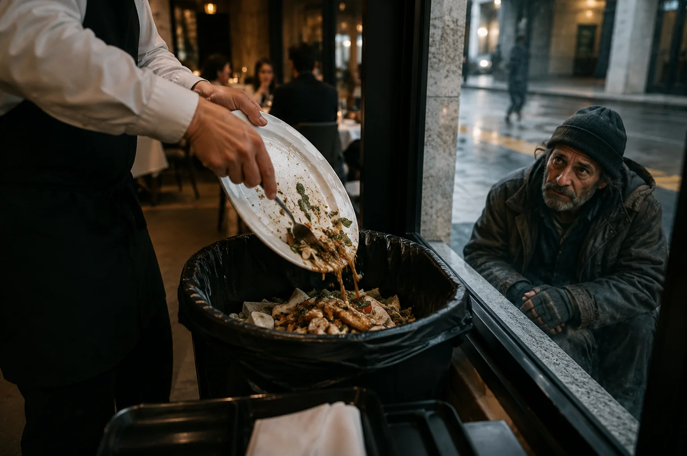
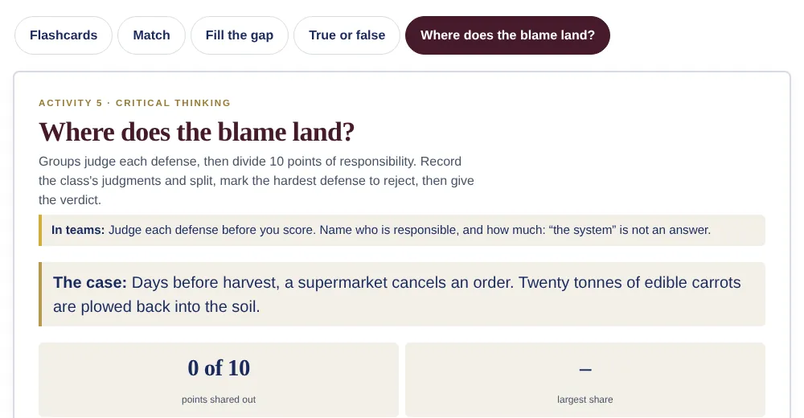

FREE LESSON · ISSUE 003
Food Waste ESL Lesson
Whose problem is it, really?
A free ready-to-teach C1–C2 ESL lesson examining who should bear responsibility for food waste. Students explore consumer habits, supermarket practices, supply chains and government policy before defending their own position on where accountability should lie.
Choose your level

FREENO SIGN-UP · NOTHING TO INSTALL
Try the Free Interactive Practice Room
Five activities from this lesson. Practice solo, project it in class with team votes, then see what the world thinks.

Get all 20 lessons
This lesson is free. Volume One includes it, plus 19 more.
VOLUME ONE
20 lessons, Issues 001–020
Plus the Student Book, Teacher's Edition and vocabulary reference. Issues 001–005 are free, so you can try before you buy.
- Download straight after paying
- Secure checkout through Payhip
- No sign-up, no subscription
- Use it with all your own classes
IN EVERY LESSON DOWNLOAD
LESSON SNAPSHOT
Time
60–75 minutes
Level
C1–C2
Focus
Argumentation and critical thinking
Includes
Student PDF · Teacher Guide · Audio · Presentation
ABOUT THIS LESSON
About This Advanced Food Waste ESL Lesson
Public discussion about food waste often focuses on what individuals throw away at home. Yet food is also lost throughout the supply chain, from crops rejected for their appearance to supermarket orders cancelled before harvest and edible products discarded because of date labels.
This C1–C2 Food Waste ESL lesson asks students to trace responsibility across that system. They examine how consumer choices are shaped by retailers, how responsibility differs between richer and poorer countries and whether governments should hold businesses accountable for edible food they discard.
Students then allocate responsibility for a large food-waste case between five different actors before proposing a national policy, defending who should pay for it and responding to opposition.
FROM THE ARTICLE
WHAT'S INCLUDED
What's Included in the Free C1–C2 Food Waste Lesson?
- Free magazine-style C1–C2 ESL student worksheet
- Advanced reading and audio about food waste and responsibility
- Five advanced expressions and evidence-based comprehension
- Discussion questions about consumers, retailers and accountability
- Critical Thinking: Where Does the Blame Land?
- Language in Context vocabulary practice
- ROLE · PROPOSE · DEFEND speaking challenge
- 200–250 word argumentative writing task
- Teacher guide, discussion guidance and complete answer key
- Ready-to-use classroom presentation
FREE ESL RESOURCES
Teach Food Waste Today
Access the complete C1–C2 Food Waste ESL lesson free, including the student worksheet, teacher guide, audio recording and classroom presentation.
Free classroom resources from Perspective English.